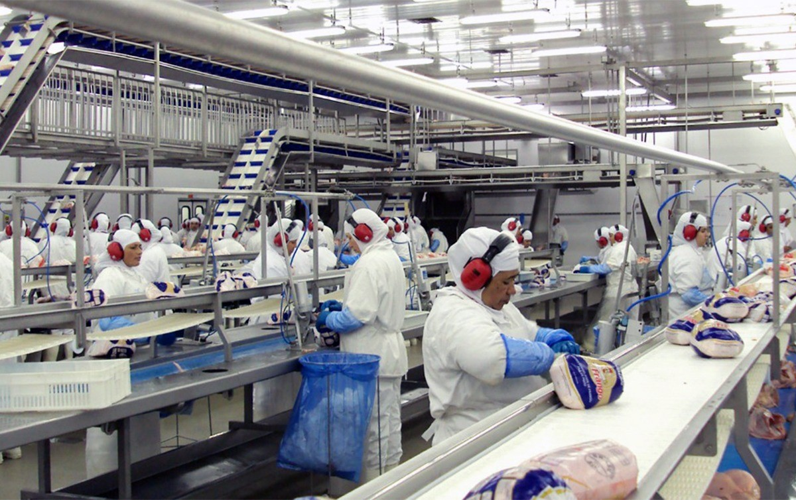

Home
Projeto
Nosso propósito
Calculadora
Login
Bem vindo a coldTech
Criamos a Solução para você
Nós da ColdTech somos uma empresa de monitoramento de temperatura, atuamos no ramo transportes de carnes, nosso principal foco é uma entrega de qualidade garantindo uma tranquilidade para os distribuidores de que as suas entregas chegarão com segurança, e para os consumidores terão um alimento seguro para o consumo, devido ao nosso sistema de monitoramento que conta com uma tecnologia de ponta, mantendo assim uma credibilidade no mercado e com os nossos parceiros e tendo uma responsabilidade sobre o nossos serviços.
Nossos serviços

blablablabl ablablablablablablablablablablab lablablablablablablablablablablabla
blablablabl ablablablablablablablablablablab lablablablablablablablablablablabla
Grupo ColdTech
Bem vindo a coldTech
Criamos a Solução para você
Nós da ColdTech somos uma empresa de monitoramento de temperatura, atuamos no ramo transportes de carnes, nosso principal foco é uma entrega de qualidade garantindo uma tranquilidade para os distribuidores de que as suas entregas chegarão com segurança, e para os consumidores terão um alimento seguro para o consumo, devido ao nosso sistema de monitoramento que conta com uma tecnologia de ponta, mantendo assim uma credibilidade no mercado e com os nossos parceiros e tendo uma responsabilidade sobre o nossos serviços.